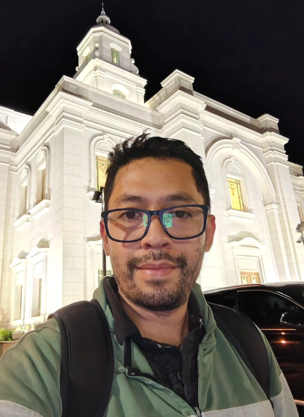

Home
About Me
My name is Francisco De Leon, and I am from Guatemala. I am currently studying Software Development and Systems Engineering through BYU-Pathway Worldwide. I have a background in graphic design and experience working in international companies, where I have developed strong communication, problem-solving, and teamwork skills. I enjoy learning about technology and discovering how websites and software applications work. I am especially interested in web development and programming, and I am continuously improving my skills in HTML, CSS, JavaScript, and C#. My goal is to become a professional software developer, build useful applications, and continue growing both personally and professionally. I believe that learning is a lifelong process, and I enjoy taking on new challenges that help me improve.
Student Photo
